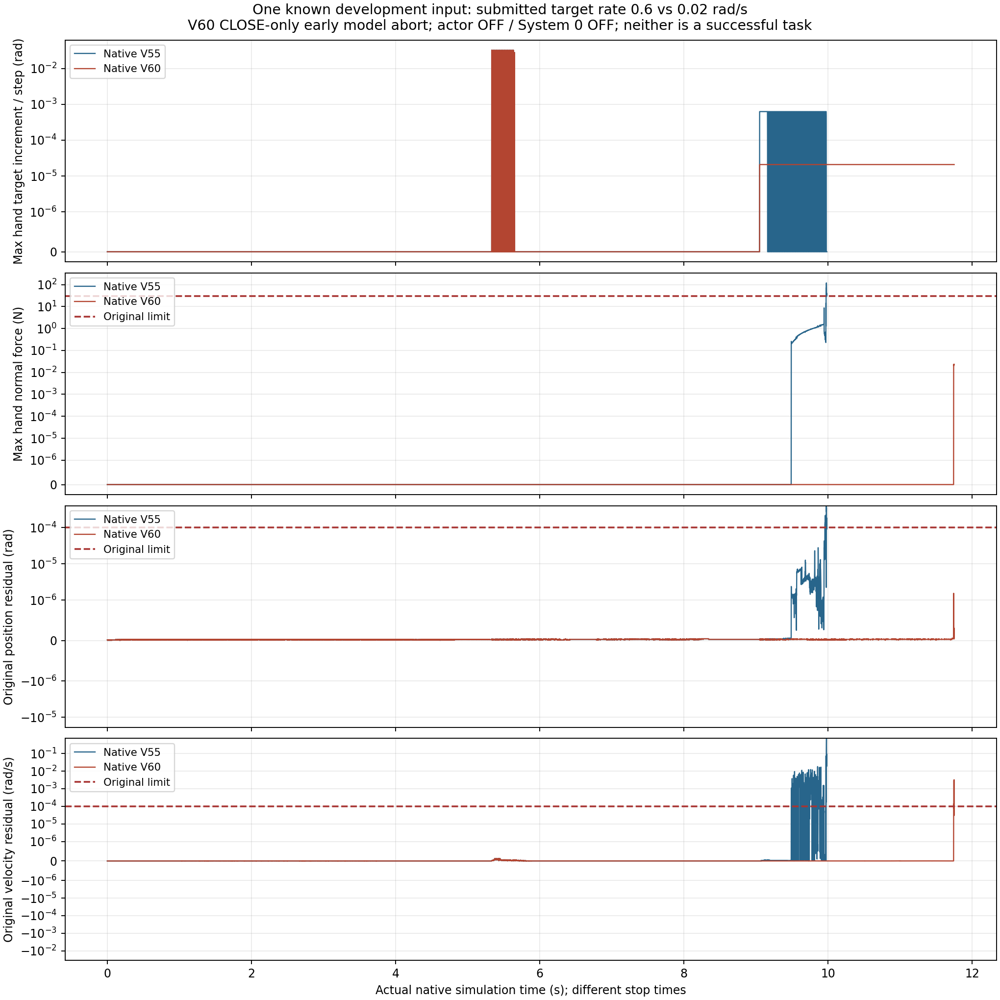
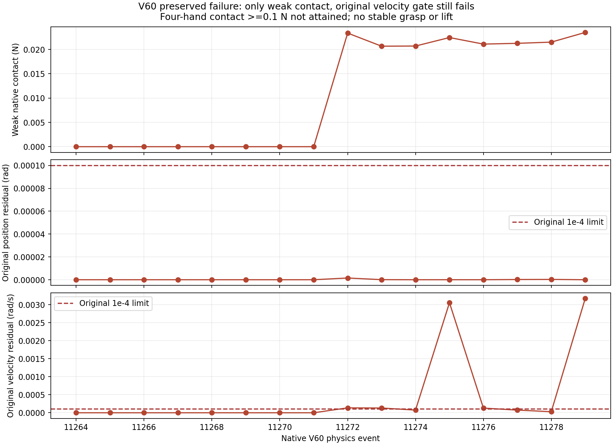

慢速夹持与物体输入验收
V60在当前记录窗口内没有物理接触超限，但原联动速度门槛失败；没有四手稳定夹持、抬升或完整任务成功。候选拒绝采用。
同一条已知开发输入，资产2 FR3/F2 + 2 UR5/DFX；标准2 FR3 + 2 JAKA ZU7 + 4 RH56F2尚未取得资格。学习策略与System 0均关闭。下面不是System 0开关对照，也不是两个独立随机样本。
慢速目标的结果
V60把手指提交目标的限速从0.6降至0.02 rad/s；全50电机仍使用原自由运动隐式预测，去掉无控制用途的科里奥利查询。另行声明了测试范围：最多2400控制周期，只到夹持阶段，原模型首次超限后完成当前16个物理步即结束。这些范围变化不计作单因素完整轨迹对照。
实测705控制周期、11280物理步，11.749530秒。最大单手法向接触力0.023495249 N，远低于30 N，但也未达到四手接触各大于0.1 N的有效负载条件。原位置误差1.54972076e-6 rad通过；原速度误差0.00317026232 rad/s，超过0.0001 rad/s约31.7倍。所有四手夹持、抬升、搬运、释放与退回持续窗口均为0。
全部77项原生参数、质量、摩擦和电机增益保持。原位置与速度联动误差均须≤0.0001，原30 N接触上限保持；四手持续夹持≥0.25秒、100 mm抬升并稳定≥2秒，以及搬运、放置、释放和退回门槛均保留。
共同时间窗口只到9.982934秒：V60尚未接触物体，零接触力不能视为负载安全改善。继续到首次弱接触时，原速度联动就超限。刚体角速度的独立重建也确认该误差；目前没有证据把它解释成单纯读数问题。
共同时间窗口与未接触说明 · 首个弱接触与超限事件 · 刚体速度独立重建 · 夹持资格拒绝与全部阻塞条件
完整记录窗口与原门槛
| 版本 | 提交目标限速 | 控制 / 物理步 | 位置误差rad | 速度误差rad/s | 最大单手接触N | 当前物理窗口 | 原模型门槛 | 四手接触秒 | 完整任务 |
|---|---|---|---|---|---|---|---|---|---|
| V55 | 原0.6 rad/s目标限速 | 599 / 9584 | 0.000382266939 | 0.686829746 | 120.017044 | 失败 | 失败 | 0 | 未完成 |
| V60 | 0.02 rad/s目标限速，夹持资格诊断 | 705 / 11280 | 1.54972076e-06 | 0.00317026232 | 0.0234952495 | 通过当前已记录窗口 | 失败 | 0 | 未完成 |


V55：原0.6 rad/s目标限速
物理接触与任务核验 · 原联动逐步核验 · 每个物理步的关节、目标与力记录 · 数据和视频索引
实际记录9.982934秒。完整质量矩阵、9021对原始几何与82刚体点接触保存在NAS。尾帧显示时长不增加物理采样。
V60：0.02 rad/s目标限速，夹持资格诊断
物理接触与任务核验 · 原联动逐步核验 · 每个物理步的关节、目标与力记录 · 数据和视频索引
实际记录11.749530秒。完整质量矩阵、9021对原始几何与82刚体点接触保存在NAS。尾帧显示时长不增加物理采样。
物体状态、大小与时间绑定
补齐了原生物体输入契约：世界坐标、wxyz姿态、完整米制尺寸、线速度和角速度共16项；检查物体清单、物理步编号、对应时间戳、有限数值、非零姿态和注册尺寸。正常数据可恢复，错误包不推进历史。
在已有V59的9584个状态上，15类错误输入共143760个软件案例均被拒绝，包括缺失、陈旧、未来、错步、单位/半尺寸错误、非有限数值、无效姿态、伪装为米的正错误尺寸和错时间重标步号。这里复用了已知状态，新增原生轨迹、随机轨迹和执行器故障试验均为0。
拒绝时输出四臂暂停请求；尚未验证实际物理安全停止。新输入未接入学习策略的模型接口，也未完成相机感知估计或真实System 0闭环验收。软件输入检查通过不等于物体感知和安全整项达标。
15类软件故障与边界 · 实际退出回执 · 尺寸与物理时钟输入契约 · 独立边界测试
执行回执与保留的失败
V60原生进程、监督器、启动器和外层工具均实际退出0，自有子进程已回收；完整记录仍判模型失败。已从原工具记录找回V57外层实际退出0，以及V55四项辅助审计实际退出0，作为新补充文件保留，原“未知”快照和审计器拒绝记录保持。回执修复不改变实验失败结论。
V59移除无用途科里奥利查询后，全部9584步主要状态与V55逐位相同；不能把该查询解释为已知失败轨迹的原因。此处V55视频明确属于V55，未重新标成V59。
V57原工具回执补充 · V55四项实际退出补充 · 去掉无用途查询后的状态一致性
原九项联合验收
| 要求 | 原判据 | 状态 |
|---|---|---|
| 回退保持在原始非零速度和延迟下持续安全 | 所有128输入全部原生几何/接触/限位/速度通过完整480控制周期；正式独立集另验 | 联合未验收 |
| 保留操作意图并有实际四臂运动 | 冻结门槛：平均路径与各分层比例>=0.9、四臂运动比例>=0.9、全部26关节平均运动范围>=0.001rad；暂停非威胁臂继续和恢复及任务完成联合验收 | 联合未验收 |
| 强随机、大范围操作空间与定向危害覆盖 | 记录采样分布、全26DOF和速度支持、覆盖图、所有拒绝及分层；不得将筛选集当无条件全空间 | 联合未验收 |
| 科学规范的冻结协议、独立多种子、留出与不确定性报告 | 机制/判据冻结后使用至少两套独立新种子；全部登记窗口与失败保留；无结果后调参；报告最坏种子和适用统计上界 | 联合未验收 |
| 物体位置、姿态、大小、速度、可达性进入明确规划与安全输入 | 逐帧实际对象状态绑定、坐标/尺度校验、可达与拥挤判定、过时/缺失状态安全处理；视觉接口另独立校验 | 联合未验收 |
| 真实物理夹持、抬升、搬运、放置和释放 | 正式100mm抬升、>=2s稳定持物准入；摩擦接触驱动，无reset后物体写位姿、parenting或固定关节替代摩擦夹持；指定手接触和阶段成功联合判定 | 联合未验收 |
| 真实四臂共同任务且有安全与不安全的同输入对照 | 同一raw/S0外生命令初态对象资产；cross/self/table各危害；选择性暂停、另一臂移开、恢复、任务成功和零违规全部通过 | 联合未验收 |
| 完整原生观测和独立危害判据，无漏测或单看画面 | 9021球对与82碰撞刚体原生接触每个物理子步，全74关节/实际目标/FIFO、对象风险；非有限数据或分母缺失即拒绝 | 联合未验收 |
| 网页可审阅的安全对照、完整视角和证据归档 | 俯视/正视/侧视及需要的局部视角正确缩放，原生状态与视频绑定，暂停/恢复/任务侧车；主站链接、实际部署和公共字节回读通过 | 联合未验收 |
4万新随机提案仍未运行原生轨迹。完整50维可达/安全体积、物体布局与噪声/陈旧状态/故障分层、标准四臂资产资格，以及真正学习System 0的同输入安全对照和独立冻结留出仍待完成。